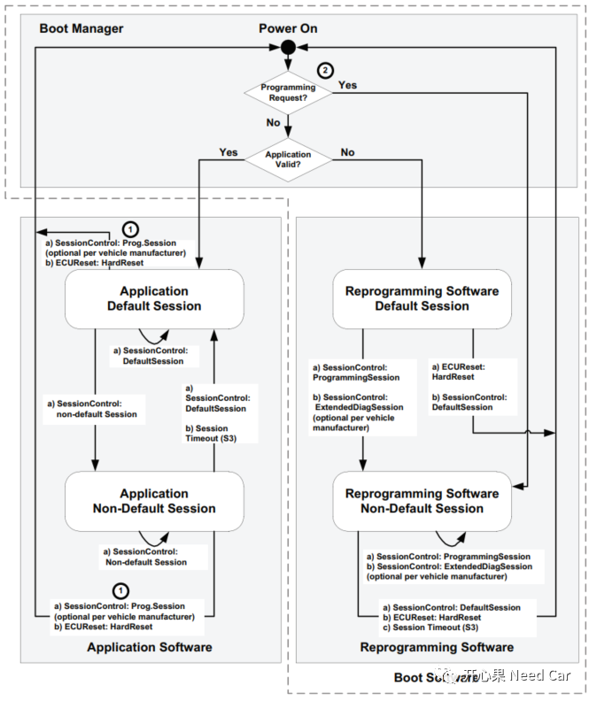
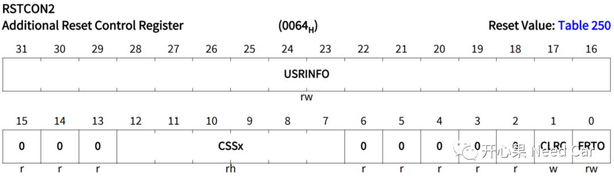
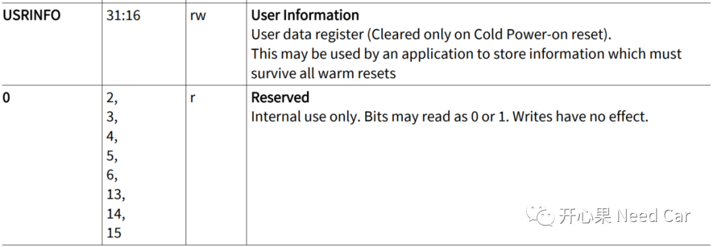
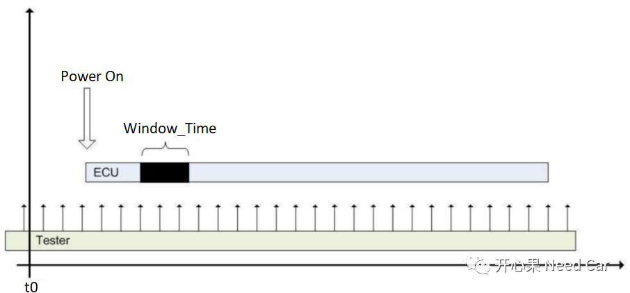

做汽车嵌入式开发，我们知道：当应用软件想要升级更新时，需要通过Bootloader程序更新。但是应用程序(Application，简称App)是如何将要更新程序的信息告知BootLoader的呢？你真的清楚吗？
前提：我们讨论APP和Boot交互建立在ECU包含App软件和Boot软件情况下。如果ECU只有APP软件，意味着此ECU不会进行软件升级，汽车级开发中，这样的ECU少见。
参考《ISO 14229-1_2013(E)》，解读一下App和Boot关键交互步骤。
- 当ECU上电时，程序最先进入Boot软件，即PC指针最先获取的程序地址是Boot程序地址；
- 在Boot下检查应用程序是否有Programming Request（即APP是否有$10 02请求）。如果APP有请求程序更新，则不再检查Application Valid（App有效标志位），程序直接跳转到Boot Software；如果APP没请求程序更新，在Boot中，再进一步检Application Valid，即App程序是否有效，App程序有效则进入Application Software，如果无效则进入Boot Software，这就是我们常说的：程序“死”在Boot了。
- 在APP程序下，我们一般有两种方式进入Boot。第一：发送诊断命令$10 02（进入编程会话）；第二：发送诊断复位指令$11 01(硬复位）。发送$10 02这个信息是需要告诉Boot，APP想更新软件。Boot和App是两个不同的软件，可以理解为两个进程，这两个进程如何交互信息呢？或者说App要更新软件（$10 02），怎么让Boot知道？一般有两种做法。第一：通过某些寄存器，这些寄存器在软复位时，信息不清除，APP将请求$10 02信息存在这样的寄存器中，Boot之后去读取这些寄存器信息；第二：Boot和App之间约定一块共享内存区域，这些区域要保证软复位后（Boot初始化时），不清除App设置的信息，这样Boot才能在共享数据区获知App要更新程序。

上图中其它信息解读：
（1）$11 01复位，均复位到Boot程序，即在App/Boot下请求$11服务均复位到Boot程序；
（2）在Boot中检查App更新请求要优先于App有效标志位的判断；
（3）App程序被更新后，进行$11 01复位目的：一，程序更新，需要复位生效；二、给App程序提供一个干净的初始化环境，因为Boot更新App过程中使用了ECU资源（比如IO、CAN或者其它总线驱动等），复位可以使得这些资源释放更彻底；
（4）App下请求$10 02进入Boot后，会话直接进入02会话（编程会话），一般需要Boot回复App的$10 02响应，即Boot回复$50 02。为什么这样呢？一般来说，App请求$10 02以后，App程序要走复位流程，需要消耗时间，程序复位到Boot以后，Boot需要初始化，也消耗一定时间。如果这些动作都被执行后，Boot给上位机响，上位机发送的下一个诊断指令就可以得到有效处理。如果App在App程序中回复$50 02，Boot初始化没完成时，上位机就发送下一个诊断指令，诊断指令将不能及时处理导致程序刷写失败。
提示：
如果使用的芯片是英飞凌系列，一般会在SCU(System Control Units)模块有一个RSTCON2寄存器，该寄存器的USRINFO位域（可读写）在应用复位时，信息不清除，可利用该特性实现App程序$10 02信息存储，进而做到APP和Boot信息交互，即Boot知道App要更新App程序。

USRINFO位域的官方解释如下所示，注意：冷启信息会被清除。
在Boot的开发中，多数都会有这样一个需求：要求Boot程序有一个停留时间，比如20ms，我们称为Stay In Boot功能。
为什么需要Stay In Boot的功能呢？在回答这个问题之前，我们假设这样一种情况：Boot刷写App软件以后，App软件由于某种原因出问题了，还没来得及设置App $10 02请求信息就崩溃了，就是说App还没有来得及告知Boot要升级的信息就崩溃了。App程序崩溃后，我们想到的就是重新更新App程序，可是Boot没有检测到App $10 02请求，而此时App有效标志位还有效，程序又跑到App里去了，之后App又崩溃了，如此往复，这就是我们说的：ECU变板砖。这样，我们就没有办法了吗？有人说，在Boot进行编程请求就可以了呀？是的，如果我们可以让Boot程序停留一段时间，以便能接收到上位机的$10 02请求就可以重新更新App程序，因为Boot软件执行很快，可能还没等到上位机发送$10 02请求就跳转到App程序了，因此需求规定了Stay In Boot功能，即让程序在Boot停留一段时间，这样就确保了Boot可以捕获上位机的$10 02请求，进而去更新App程序。刚才提到，Stay In Boot功能要求在Boot中停留一段时间，这个时间我们称为刷新请求窗口期（Window_Time），这个时间内Boot尝试捕获上位机的$10 02请求。这里需要注意一点，$10 02请求周期多少合适呢？假设Window_Time = 5ms，那么$10 02请求周期要 ≤ 5ms才有可能被Boot收到，如果在实现的时候就设置5ms，那也可能会导致Boot接收不到$10 02请求，因此一般会要求$10 02请求周期≤ Window_Time/2，即确保Window_Time内Boot能收到$10 02请求，进而进行App程序更新。

当Boot程序有了Stay In Boot功能，那么程序从Boot跳转到App程序时，Boot中势必要消耗一定的时间。而在网络管理测试时，对ECU的启动时间一般是有要求的，比如App程序发送出第一帧网络管理报文的时间≤150ms。注意：这个时间包含Window_Time、Boot初始化、Boot去初始化时间、App初始化时间。因此，当功能不能满足此时间需求时，可以在这几个地方排查哪个地方时间消耗得最多，之后做进一步程序优化。